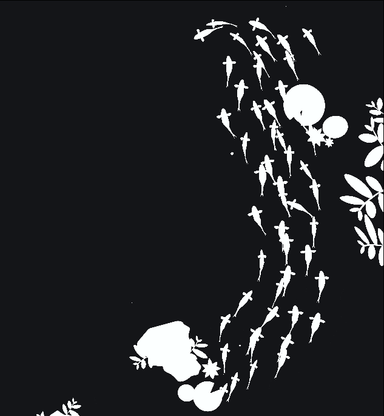
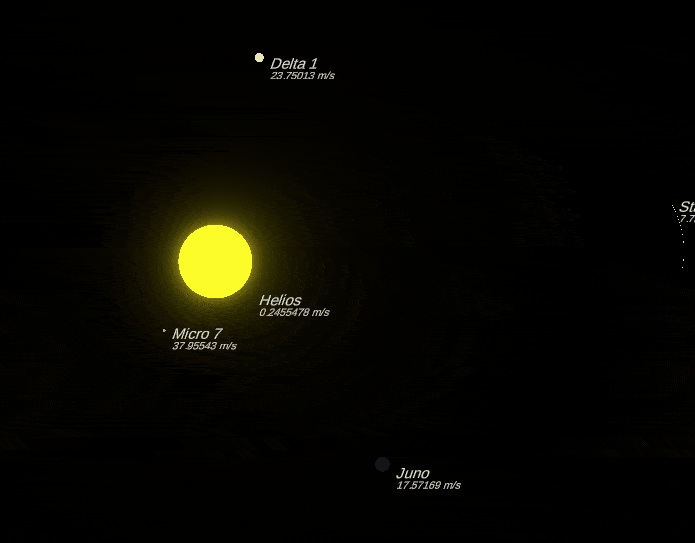
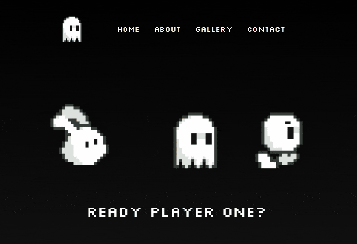
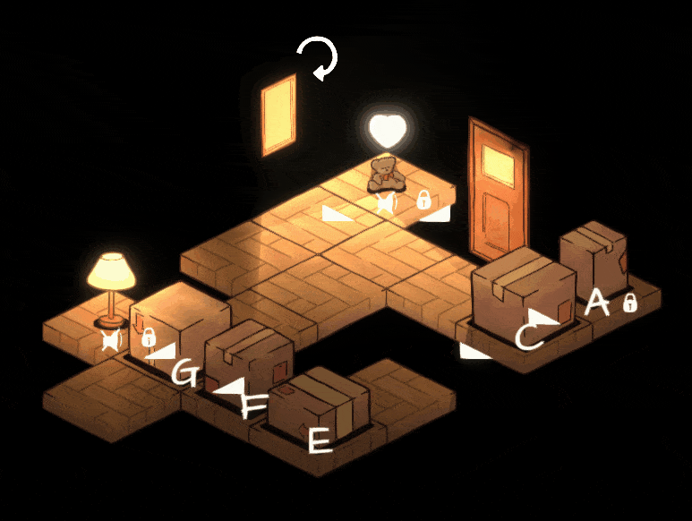
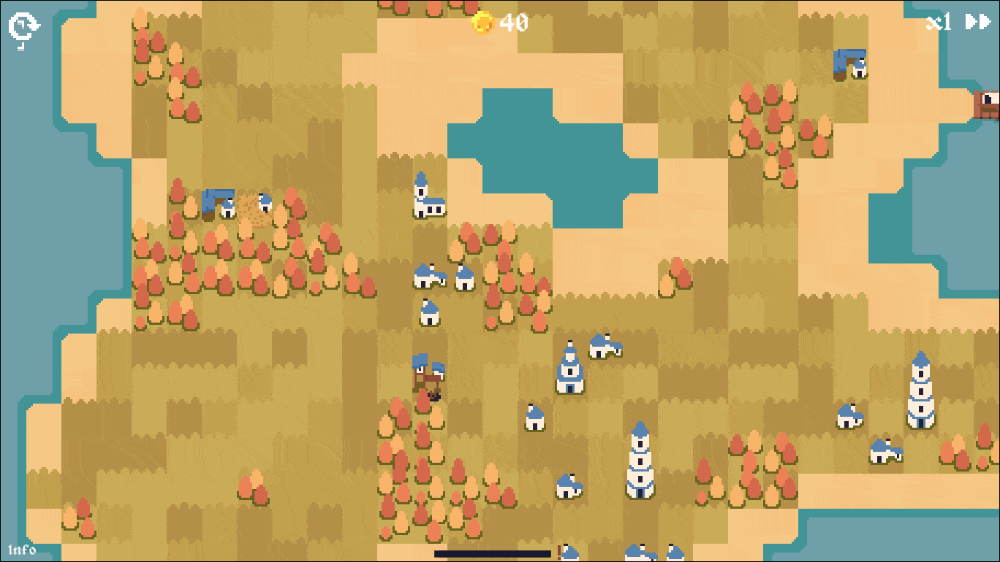
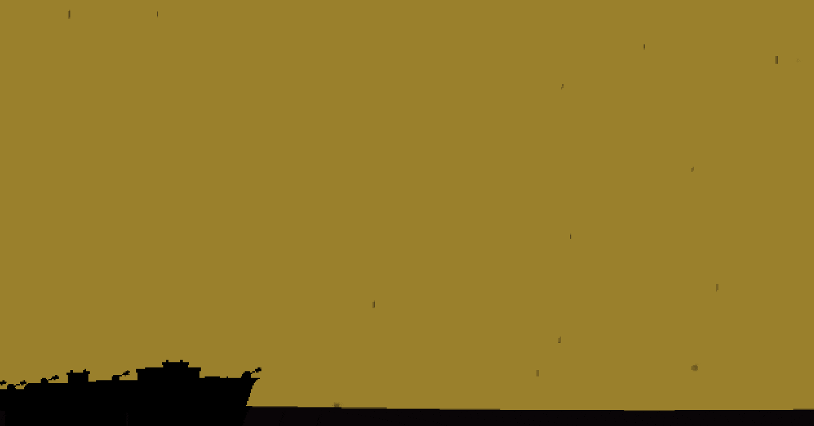
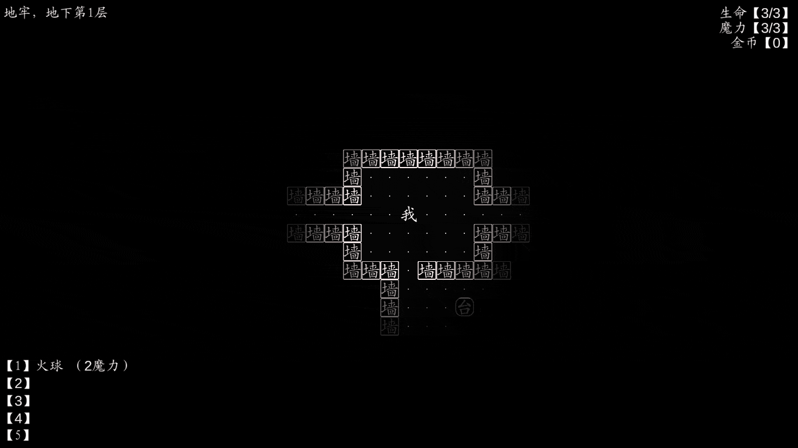

Hello world, I'm Austin. An indie game developer located in Malaysia.
About
Info
Projects
Contact
Source code
About me
Hi, I'm Austin.
I'm an indie developer experienced in creating a variety of projects, ranging from video games, to software, to websites and more.
Feel feel to
contact me
if you feel that I can do something for you!
NETWORK
Personal Instagram
Art Instagram (Discontinued)
Github
Itch.io
GRAPHIC TOOLS
Aseprite
Krita
Adobe Illustrator
SKILLS
Unity & C#
Python
HTML CSS & Javascript
C++
CODING TOOLS
Visual Studio
Visual Studio Code
Unity Engine
Projects

Project Koi
A boid simulation using the rules of avoidance, cohesion and alignment. Made in December of 2022.

Project Helios
A gravity simulation using Newton's universal law of gravitation and Kepler's 1st law of planetary motion. Made in May to June of 2022.

Portfolio website v1
My original portfolio website, taken down. Made in 2021.

An Ode to Summer
A short 8 level demo of a musical puzzle game, where you chain notes together to create a tune.
My Animanga
A list for anime and manga lovers to keep track of their series. Built using HTML, CSS, Electron JS, and Node JS.

Project Politismos
A trading game demo with procedurally generated landscape and islands. Made in June to July of 2022.
Class website
Created portfolio website templates for my classmates to show their achievements, to be put on the school's official website.
Watch my Nucleus
A game made for the Ludum Dare 49 Game Jam, with the theme "Unstable". Won 61st out of 2939 participants in "Theme" category.

1914 prototype
A short demo where you play as a fighter jet fighting off invaders. Yet to be redone!

字 zì
A 10 level roguelike paying homage to the original Rogue, with procedurally generated dungeons, an array of enemies and spells. Made in December of 2022 to January of 2023.
Mask prototype
A demo for a rage game where you throw a mask, and your character teleports to the location of said mask. The goal is to get to the top.